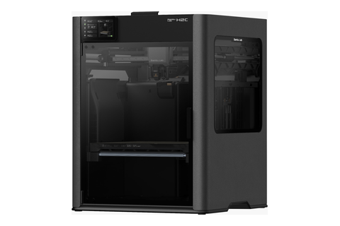
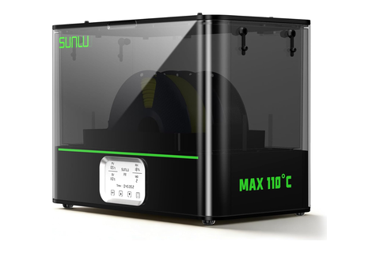
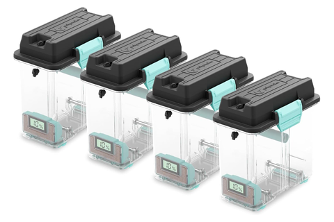

3D printers
two Bambu H2C · nearly every part inside the appliance starts here
Tool station · 13/13Kitchen edition
A spool never moves between where it dries and
where it prints. PETG dries in the AMS 2 Pro and the same unit
feeds the print; PET-CF dries in the E2 and prints out of its chamber; TPU
feeds from a sealed box. So the question at the spool is not which dryer
— it is which home.
Printers
H2C × 2 AMS Combo
Plate
Engineering for CF
PETG
AMS 2 Pro ×3 dries + feeds
PET-CF · TPU
E2 · PolyDryer 110 °C
Filament
Dries and feeds from
Comes off the plate as
What it is really for
PETG, blackCC-13 · EN-05 · EN-06
AMS 2 Pro
fresh rolls straight in; dries in place, feeds the
print when the cycle ends
The cold-core shell stack with the cap’s valve cradles, both
enclosure halves, drip pan + rails, PRV shroud, reed bridge, AC hub
foam-shell on the H2C at a 0.8 mm nozzle
The workhorse, and most of the machine's mass — sealed bag to
AMS to plate, never handled.
PETG, clearCC-08 · CC-09
The same AMS 2 Pro
Bambu PETG Basic, Translucent Clear — same
spool tier as the black
Both reservoir bodies and both reservoir caps — the four
syrup-wetted parts
nothing else printed in the machine touches syrup
The wall is the fuel gauge — the customer reads fill level
straight through it.
TPU 90ACC-15 · FU-02
PolyDryer box
short straight feed out of a sealed box — what
dispenses a soft filament cleanly
Every soft seal — foam-cap gaskets, reservoir gaskets,
bulkhead washers, vent retaining rings, faucet mounting gasket and
o-ring
printed from per-unit-trivial stock, not costed
The machine buys no gaskets. A seam that needs a seal gets one printed
to the seam.
PET-CFfaucet sub-assembly
SUNLU E2 110 °CFiberon PET-CF17 ·
100 °C × 10 h
· prints out of the chamber
The Touch-Flo shell — bottom, middle and top — and the
faucet mounting plate
on the engineering plate; M3 heat-set inserts go in at SO
The only printed parts the customer touches, and the only ones
carrying a load path through a countertop.
⛔
The four
reservoir parts are the wetted surface — the bare print is
what the syrup sits against, and no bench downstream re-qualifies
it.
Off the deck, still printed here: the coil
mandrel, the reed-bridge setting gauge, the two-piece hopper-funnel
mold and the single-valve cradle. Tooling — none of it ships.
Have in hand

Bambu H2C×2, AMS ComboAMS2 Pro ×3 · HT ×2

SUNLU E2110 °C, the PET-CF

PolyDryer×4 sealed, the TPU
Three homes, one printer — a spool goes
into the unit that dries it and stays there. The S4 holds sealed stock:
nothing dries in it, and nothing prints out of it.